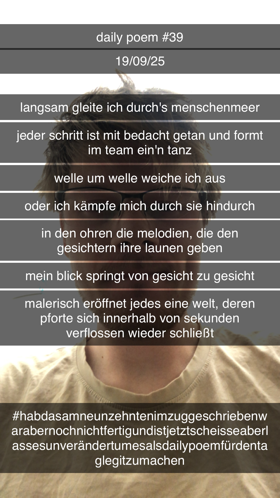

langsam gleite ich durch's menschenmeer (Eine unvollständige Skizze)
[39]langsam gleite ich durch's menschenmeer
jeder schritt ist mit bedacht getan und formt im team ein'n tanz
welle um welle weiche ich aus
oder ich kämpfe mich durch sie hindurch
in den ohren die melodien, die den gesichtern ihre launen geben
mein blick springt von gesicht zu gesicht
malerisch eröffnet jedes eine welt, deren pforte sich innerhalb von sekunden verflossen wieder schließt

Anmerkungen
im zug nach göttingen geschrieben, dann nicht fertiggestellt, später zu besoffen gewesen, und am tag danach in bestehender form nachgeliefert, um die streak nicht zu brechen